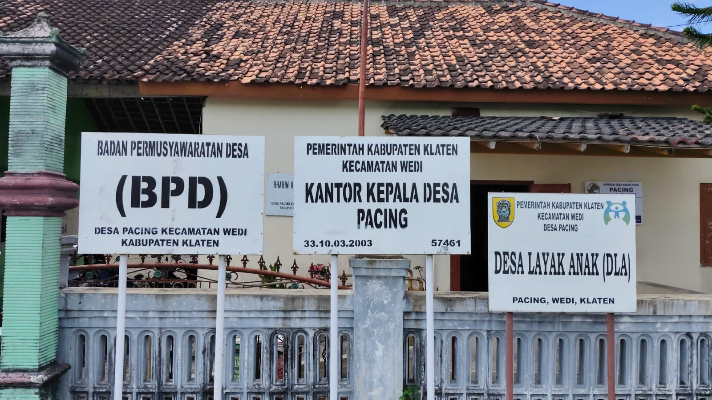

| No | Nama | Gambar | Tempat Lahir | Tanggal Lahir | Jabatan | Periode | Kategori | Riwayat Pendidikan | Riwayat Jabatan | Aksi |
|---|---|---|---|---|---|---|---|---|---|---|
| 1 | Budi Santoso |  | Klaten | 1988-11-26 | Kepala Desa | 2020-2026 | Perangkat Desa |
SMA Negeri 2 Klaten (2003–2006) SI Universitas Atmajaya Yogyakarta (2006–2011) |
Anggota DPRD Kabupaten Klaten (2014–2019) Ketua DPRD Kabupaten Klaten (2019–2024) |
|
| 2 | Siti Aminah | Klaten | 1990-03-15 | Ketua BPD | 2021-2027 | BPD |
SMA Negeri 1 Klaten (2005–2008) S1 Universitas Gadjah Mada (2008–2012) |
Sekretaris BPD (2015–2021) Ketua BPD (2021–2027) |
||
| 3 | Agus Prasetyo | Klaten | 1985-07-10 | Ketua Karang Taruna | 2022-2026 | Karang Taruna |
SMA PGRI Klaten (2000–2003) D3 Politeknik Negeri Semarang (2003–2006) |
Anggota Karang Taruna (2015–2022) Ketua Karang Taruna (2022–2026) |
||
| 4 | Dewi Lestari | Klaten | 1992-12-01 | Direktur BUMDes | 2021-2025 | BUMDes |
SMK Negeri 1 Klaten (2007–2010) S1 Universitas Sebelas Maret (2010–2014) |
Staf BUMDes (2017–2021) Direktur BUMDes (2021–2025) |
||
| 5 | Rudi Hartono | Klaten | 1983-05-20 | Ketua KDMP | 2020-2024 | KDMP |
SMA Muhammadiyah Klaten (1998–2001) D3 Akademi Pertanian (2001–2004) |
Anggota KDMP (2010–2020) Ketua KDMP (2020–2024) |
||
| 6 | Sri Wahyuni | Klaten | 1987-09-09 | Ketua Kelompok Tani | 2019-2025 | Kelompok Tani |
SMA Negeri 3 Klaten (2002–2005) S1 Universitas Negeri Yogyakarta (2005–2009) |
Anggota Kelompok Tani (2012–2019) Ketua Kelompok Tani (2019–2025) |
||
| 7 | Murniati | Klaten | 1995-04-18 | Ketua PKK | 2023-2027 | PKK |
SMA Negeri 4 Klaten (2010–2013) S1 Universitas Diponegoro (2013–2017) |
Sekretaris PKK (2018–2023) Ketua PKK (2023–2027) |
||
| 8 | Slamet Widodo | Klaten | 1978-11-30 | Ketua RT 01/RW 02 | 2022-2025 | RT/RW | SMA Negeri 5 Klaten (1993–1996) |
Anggota RT (2015–2022) Ketua RT 01/RW 02 (2022–2025) |